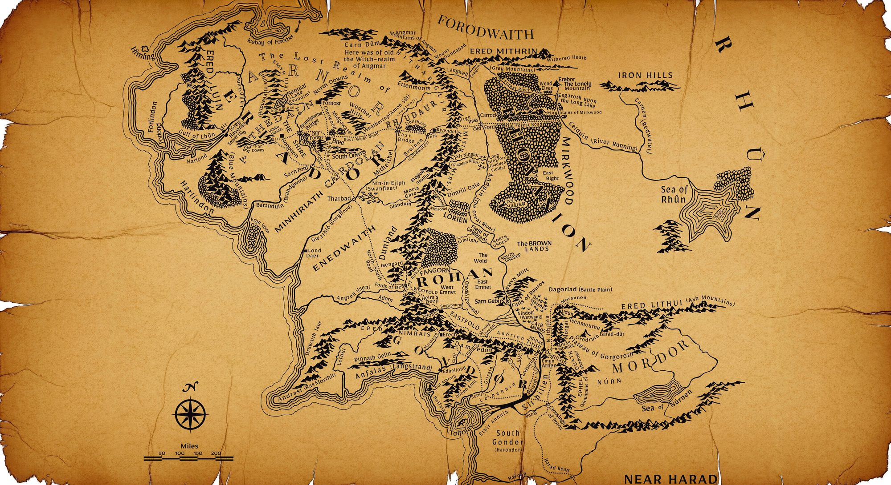

The Journey
— km
The Lord of the Rings
“Courage is found in unlikely places.” — Gildor
— km

All time
Every league walked and ridden since the first step out of the Shire.
The tally
What this week and this month have asked of you.
The last twelve weeks
Distance above, climbing below. Hover a week for the detail.
| Week of | On foot | On wheels | Total | Climbing |
|---|
Deeds worth singing about
The days the road gave something back.
Most recent
The last few days on the road.